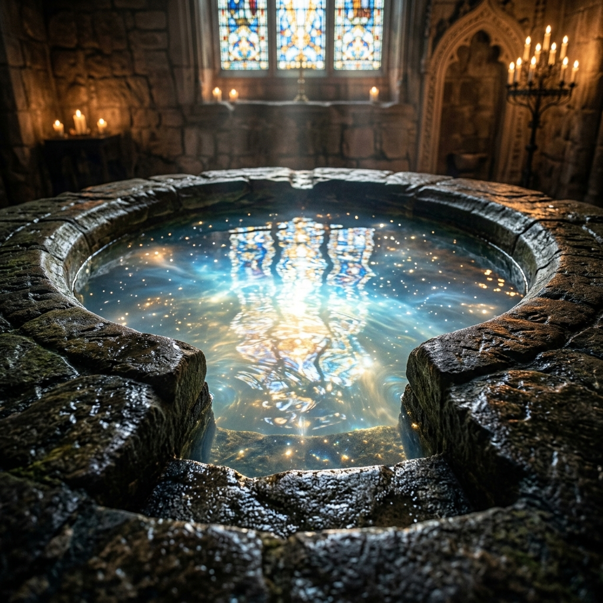
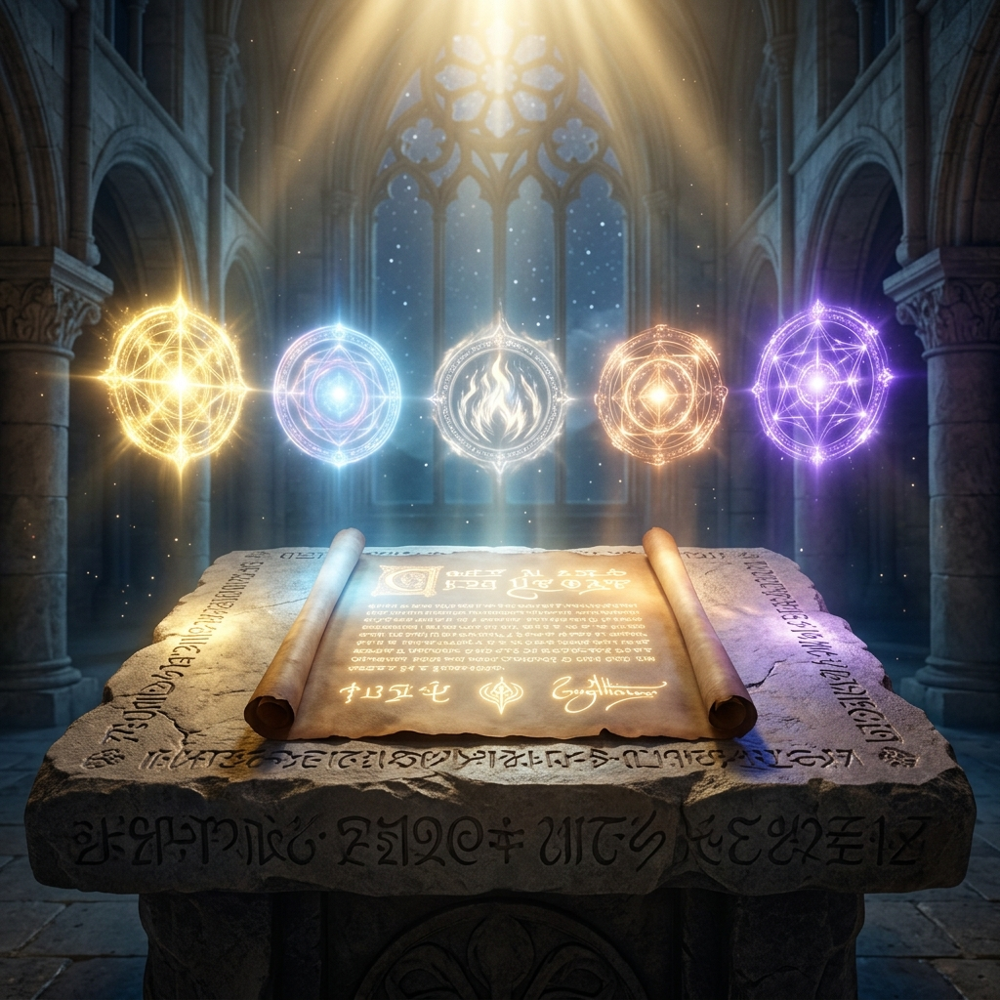
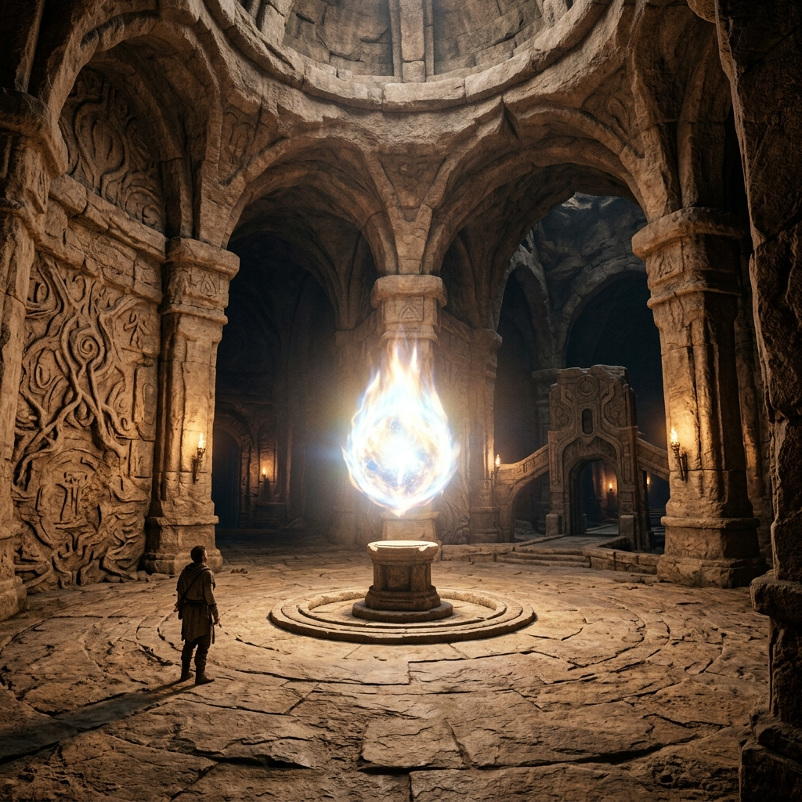

Masterclass Module
UNBELIEVER TO
BELIEVER
The Day I Got Baptized for the Wrong Reasons
The fundamental problem with a human being is not behavioral correctness. It is spiritual death. Yet millions go into the baptismal water hoping to avoid wrath without realizing the water is not the finish line.
🔑 The One-Line Thesis
Grace is not dependent on the purity of your motivation at the starting line, but the starting line is not the destination. If you are spiritually alive but psychologically unchanged, you will cycle.
📜 The Diagnosis: Cornelius vs Nicodemus
The fundamental problem is not bad behavior, and therefore it cannot be fixed by willpower or religious effort. Cornelius was devout and generous (Acts 10) but still dead. Nicodemus was a religious ruler (John 3) and Jesus told him "You must be born again."
"Do not be conformed to this world, but be transformed by the renewing of your mind."
— ROMANS 12:2
🗺 The Five Legal Transactions of the Cross
Tap any seal to view the exact mechanism of the atonement.
THE SUPERNATURAL SHIFT
🧩 Experiential Deep-Dives & Labs
I. THE FRUSTRATION GAP (STAGE TWO)
When you are born again, your spirit regenerates instantly. But your soul (mind, emotions, limiting beliefs) stays exactly as it was. Because the gap between the starting line and the transformed life was never navigated, many sit in church totally saved but practically unchanged.
You can consciously believe one thing, but subconsciously believe the opposite. In that collision, the subconscious wins almost every time.

II. THE 4 STEPS TO METAMORPHOSIS
Transformation (metamorphoo) is surgical. A caterpillar does not become a better caterpillar. It becomes entirely different.
- 1. Brutal Honesty: Name your limitations. Where did they actually originate?
- 2. Superior Information: Scripture replaces the vacuum.
- 3. Repetition: You must repattern the subconscious.
- 4. Sight by Faith: See yourself in the new reality before it arrives physically (Romans 4:17).
III. THE THREE MINISTRIES FOR GROWTH
You cannot mature spiritually in isolation. You need three distinct ministries working simultaneously to prevent stalling.
- The Holy Spirit: The Person who guides, not forces. He waits for genuine hunger.
- The Word of God: The surgical instrument (Heb 4:12) treated with absolute authority over your feelings.
- A Teaching Priest: A human vessel provided by God (Jer 3:15) to correct you and impart what isolation cannot.

⚠️ The Critical Warning
Do not settle in Stage Two. Stage Two is the "New Believer" phase where the spirit is alive but the mind is on old software. Millions stay here forever, caught in a cycle of sinning, repenting, maintaining attendance, and yet feeling that nothing has genuinely shifted. The water was just the beginning. The mind must be aggressively renewed.
🪞 Reflection — The Baseline Audit
What was your REAL reason for coming to God? Not the testimony version... but the actual logic. Fear? A way out? Social pressure?
Are you currently spiritually alive, but psychologically unchanged? Have you been substituting Sunday attendance for actual mind renewal?
What specific negative beliefs shape your daily subconscious? Can you name their source?
🔥 The Closing Declaration (The Secret Place)
THE MANDATE ACCEPTED
"I refuse to remain spiritually alive but practically unchanged. I commit to the Secret Place. I submit to the Holy Spirit, the authority of the Word, and the impartation of the Teaching Priest. I will renew my mind until my subconscious aligns with Heaven."